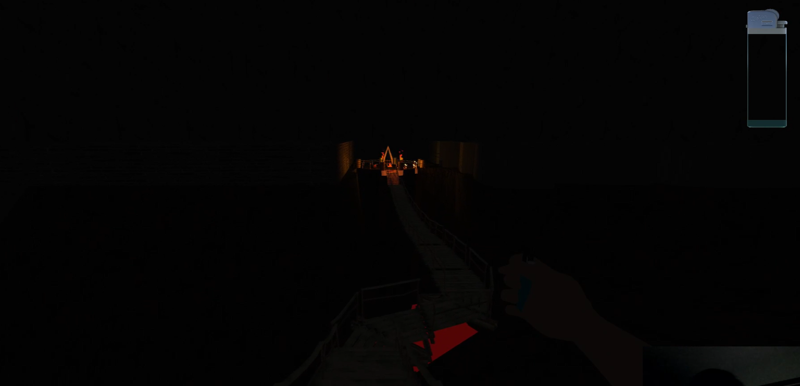

WISP Development
WISP is a project that was created for the University of Michigan's Introduction to Game Development course, EECS 494. It was created in a group of 5 students, including myself, over the course of 6.5 weeks. Over the course of these 6.5 weeks, the team went through many different iterations until finally settling on our final dorm theme and level progression that you can now download and play. We arrived at our most recent iteration idea about 3 weeks before our release date, so the WISP you can see today on itch.io is the result of 3 dedicated weeks of work from all members of our team.
One of the earliest screenshots of WISP after our first week of development.
The one thing that remains from these first few iterations of the game is the
model of our trusty lighter, while the rest of the gameplay and stages from our
first few weeks of development were scrapped.
Our first iteration of the main enemy in WISP. Our original idea
was to have an enemy (represented by the eyes) appear on screen
when a player had been in the dark too long. We ultimately moved towards
a physical AI enemy pursuing more exciting gameplay.
As displayed in the above gameplay screenshots from our first few weeks of development, there is a lighter fuel indicator in the top right of the captures. Originally, WISP was to be a survival horror game with a strong emphasis on resource management, forcing the player to sparingly use their lighter to keep themselves safe from the dark while conserving their fuel. ultimately, after weeks of playtesting, and many frustrated remarks from our valiant playtesters, we decided to do a hard pivot, scrapping all the gameplay we had designed up until this point -- most of which I had designed.

A screenshot from our cinematic boardwalk sequence that led the player to our
main gameplay stage, a central hub with mazes branching out from either side.
In this iteration of the game, you can notice our updated fuel UI and the overall
darkness of the game. As of this screenshot, our idea was that the lighter would be
the player's main light source in their environment.
A screenshot from the central hub of our gameplay environment. Seen in the screenshot
is a goofy attempt at a dead body. This figure was supposed to leave books for you
along your adventure in the mazes, slowly revealing the (not very well kept) secrets
of the environment. As noted by our ever vigilant playtesters, many time discontinuties
existed in our story telling as of this iteration.
During my time on the team,